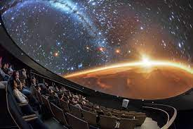

Astronomy is the study of everything in the universe beyond Earth’s atmosphere. That includes objects we
can see with our naked eyes, like the Sun , the Moon , the planets, and the stars . It also includes objects
we can only see with telescopes or other instruments, like faraway galaxies and tiny particles. And it even
includes questions about things we can't see at all, like dark matter and dark energy.
Astronomy has and continues to revolutionize our thinking on a worldwide scale. In the past, astronomy has been used to measure time, mark the seasons, and navigate the vast oceans. As one of the oldest sciences astronomy is part of every culture's history and roots.
Inventions Used For Astronomy
- The Telescope
- Binoculars
- Planetarium 
- Newtonian Telescope
- Radio Telescope
- Reflecting Telescope
- Refracting Telescope